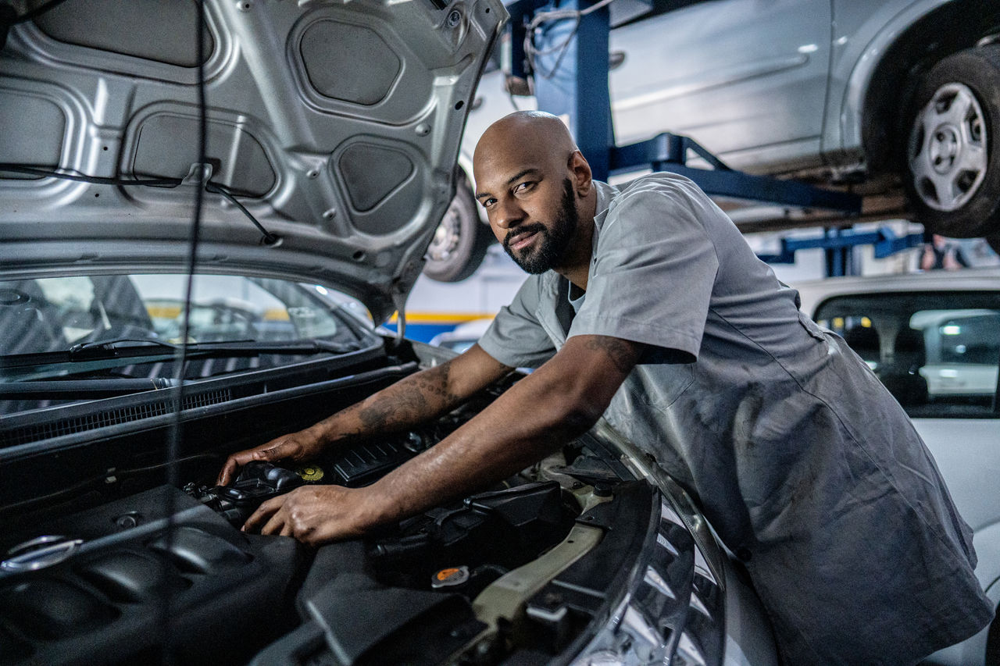

Luz no painel acesa
Diagnóstico eletrônico para identificar falhas e possíveis problemas.
Revisão, manutenção e diagnóstico automotivo com atendimento profissional e orçamento pelo WhatsApp.

Identificar sintomas cedo pode ajudar a evitar falhas maiores e custos desnecessários.
Diagnóstico eletrônico para identificar falhas e possíveis problemas.
Verificação de amortecedores, buchas, pivôs e componentes.
Avaliação de pastilhas, discos e sistema de frenagem.
Diagnóstico de ignição, injeção e funcionamento do motor.
Verificação de alinhamento, suspensão e pneus.
Manutenção preventiva para evitar problemas maiores.
Manutenção preventiva e corretiva para diferentes necessidades do seu veículo.
Inspeção dos principais componentes do veículo antes que problemas apareçam.
Pedir orçamento →Troca de óleo e dos filtros de óleo, ar, combustível e cabine.
Pedir orçamento →Manutenção de pastilhas, discos, fluido e demais componentes.
Pedir orçamento →Diagnóstico de amortecedores, buchas, pivôs e componentes.
Pedir orçamento →Leitura de falhas e análise dos sistemas eletrônicos do veículo.
Pedir orçamento →Diagnóstico e manutenção do sistema de alimentação e funcionamento do motor.
Pedir orçamento →Diagnóstico, manutenção e higienização do sistema.
Pedir orçamento →Manutenção de correias, mangueiras, líquido de arrefecimento e componentes.
Pedir orçamento →Ruídos, luzes no painel e alterações no comportamento do veículo podem indicar problemas que ficam mais caros quando ignorados.
Envie uma mensagem pelo WhatsApp e conte o que está acontecendo.
Combinamos um horário para receber o veículo.
A oficina avalia o problema e apresenta o orçamento.
O reparo só é realizado após a aprovação do cliente.
Ambiente organizado, diagnóstico e manutenção em uma estrutura pensada para atender com segurança e eficiência.


Consulte nossa equipe para confirmar o atendimento ao seu veículo.
A Prime Auto Center oferece serviços de manutenção preventiva e corretiva para veículos nacionais e importados. Nosso objetivo é identificar problemas com precisão, explicar cada serviço ao cliente e realizar somente os reparos previamente autorizados.
Depoimentos abaixo são apenas exemplos demonstrativos e não representam clientes reais.
“Levei o carro para revisar os freios e explicaram todo o serviço antes de começar. Atendimento muito bom.”
Avaliação demonstrativa“Gostei da clareza no orçamento e da explicação do diagnóstico. O processo ficou fácil de entender.”
Avaliação demonstrativa“Agendei pelo WhatsApp e fui atendido no horário combinado. Site simples de usar e contato rápido.”
Avaliação demonstrativaEstrutura demonstrativa preparada para SEO local e fácil substituição pelos dados reais do cliente.
Endereço: Curitiba - PR
Telefone:
WhatsApp:
Horário: Seg–Sex, 8h às 18h; Sáb, 8h às 12h*
Sim. Nesta demonstração, o fluxo prevê avaliação e apresentação do orçamento antes da autorização do cliente.
O agendamento é recomendado para organizar o atendimento, mas a política real deve ser definida por cada oficina.
O site pode apresentar pacotes de revisão conforme os serviços oferecidos pela oficina.
A estrutura suporta diversas marcas. A lista deve ser ajustada conforme a capacidade técnica do cliente.
Sim, esse serviço está incluído como exemplo na demonstração.
Essa condição depende da política da oficina e deve ser confirmada antes do agendamento.
A garantia depende do tipo de serviço, peças e condições comerciais da oficina.
O prazo varia conforme o veículo, itens avaliados e necessidade de reparos adicionais.
Fale com nossa equipe e solicite uma avaliação.
Solicitar orçamento no WhatsApp